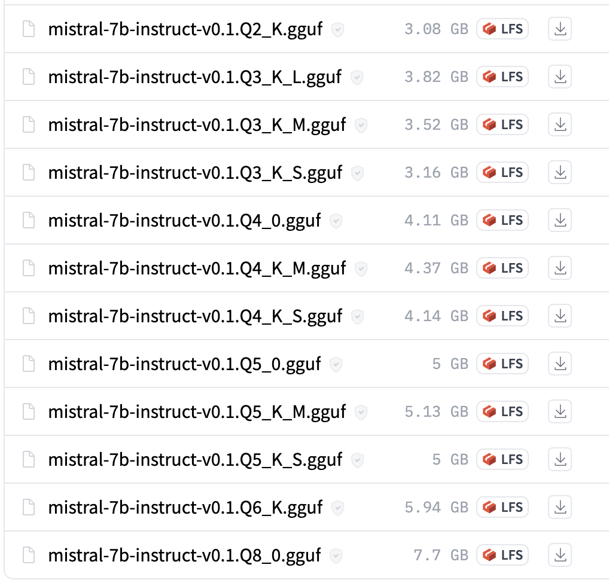

from llama_cpp import LlamaRunning llama.cpp on a laptop and phone
fractal
python
LLM
Running LLMs with
llama.cpp.
Intro
This notebook uses the llama.cpp library to run models locally and on the phone (soon).
llama.cpp
llama.cpp is focused on quantizing and deploying LLMs on Mac, but they support linux and windows as well. Despite its name, the project supports a ton of models beyond Llama and Llama-2. It is very straightforward to install. And there are even python bindings to make our lives easier.

The original project was stitched together in a single evening, and has since become the arguable SOTA for deploying LLMs on CPUs. The llama.cpp community is full of is incredibly helpful and responsive people.

There benefits of the repo go beyond even the code and models. The community is always bringing in the greatest and latest approaches from the avalanche of LLM progress. The Pull Requests and Issues are full of folks working and experimenting to integrate these advances. Thankfully, the community is very open to indie hackers and unconventional ideas: if something works and there’s proof, it’s merged in.
In fact, this notebook is living proof of the power of Open Source. Last lesson we used the MLC library because it was the only one that supported LLMs on iOS. But, literally since last week, llama.cpp added and fixed support for iOS LLMs. MLC is a great project and worth keeping an eye on, but for now we march on under the llama banner.
Running Mistral-v0.1 with llama.cpp
This section covers the following:
- Setting up and installing the llama.cpp repo.
- Downloading a Mistral-v0.1 model.
- Running the Mistral model directly with llama.cpp
- Running the model with the python bindings
First we create an environment for llama.cpp, then we download and install the repo.
Then we download a Mistral-v0.1 model that’s already been quantized into the special GGUF format that llama.cpp expects.
Lastly, we run the model on a sample input.
Installing llama.cpp
First, create a new environment for llama.cpp. Then install the dependencies.
# create an environment for llama.cpp
mamba create -n llama-cpp python=3.11This isn’t strictly necessary for llama.cpp since it uses C++, but we’ll need it for the python bindings. Even without those, it’s good practice to make and keep isolated environments for your projects.
Next activate the environment:
# activate the environment
mamba activate llama-cppWe can now download and move into the repo:
# clone and move into the llama.cpp repo
git clone https://github.com/ggerganov/llama.cpp
cd llama.cppLlama supports both the GNU Make and CMake build systems. Note that make works fine on Linux, but I’ve had mixed results on Mac. For that reason we’ll stick with CMake here. On Mac you can install cmake with homebrew: brew install cmake. On linux you can install it with sudo apt install cmake. For Windows folks you can grab the latest installer from here.
Once you installed cmake and are inside the repo, go ahead and build it. The steps below are a standard build process with cmake, you’ll see something similar in many different projects.
We can also pass a flag to build Llama with optimizations for certain hardware. Note that cmake build arguments have a funky syntax where they’re prefixed by -D and then the argument name.
Here are the flags for different hardware:
- To build for Mac’s Metal acceleration: -DLLAMA_METAL=1
- To build for NVIDIA GPUs: -DLLAMA_CUBLAS=1
# prepare for a cmake build
mkdir build
cd build
# prepare the build for Metal acceleration
cmake -DLLAMA_METAL=1 ..
# # or, replace with this to build for NVIDIA GPUs
# cmake -DLLAMA_CUBLAS=1 ..
# build the accelerated llama.cpp project
cmake --build . --config Release The accelerated files are inside the build/ folder itself. It has the main way we’ll be calling the llama library: main.
With llama.cpp installed, we can now download a Mistral-v0.1 model and run it.
Downloading a Mistral-v0.1 model
As mentioned earlier, we’ll grab a model that’s already been set up to work with llama.cpp. We’ll rely on a model uploaded by a user known as TheBloke. His efforts are another example for the power of Open Source: this user has uploaded almost 2,000 models that anyone can now use!
Here is the Mistral-v0.1 model already formatted for llama.cpp. The model has 7 billion parameters, and is the Instruct version which was explicitly trained to follow and complete instructions.
Link to
Mistral-7B-Instruct-v0.1
Click the link above, then navigate to the Files and version tabs. You’ll see a list of available models, each one quantized in a different way:

The Q4 models will more comfortably fit on consumer GPUs and hardware. But the higher number after the Q the more accurate the model will be. Here we’ll use the Q5_K_M model which is a bit larger and slower than the Q4 models but makes up for it in performance.
Let’s grab the Q5_K_M model. First, make sure the huggingface-hub CLI is installed:
# install a tool to download HuggingFace models via the terminal
pip install huggingface-hubThen move into the models/ folder and download the model:
# download the Mistral model
huggingface-cli download TheBloke/Mistral-7B-Instruct-v0.1-GGUF mistral-7b-instruct-v0.1.Q5_K_M.gguf --local-dir . --local-dir-use-symlinks FalseNow that we have the model, we can run it to make sure everything works.
Running the Mistral model
We’ll use the main binary inside of the build/ folder to run it. Go ahead and run the following command to see Mistral-v0.1 in action!
# run the inference on the official example from the build/
./bin/main -m ../models/mistral-7b-instruct-v0.1.Q5_K_M.gguf -n 128 -p "Building a website can be done in 10 simple steps:\nStep 1:"And that’s it! We’ve now done the following:
- Installed llama.cpp.
- Downloaded a Mistral-v0.1 model.
- Ran the model on a sample input.
However, this was all via the command line using C++ binaries. How could we do the same with python and Notebooks? Enter the python bindings.
Running llama.cpp model with python
First step, let’s install the llama.cpp python bindings into our environment. We’ll repeat ourselves a bit here, since the python bindings attempt to build and install the C++ repo as well.
Here are the instructions for the full Mac Metal installation
The TL;DR is to run the following command inside our environment:
pip uninstall llama-cpp-python -y
CMAKE_ARGS="-DLLAMA_METAL=on" pip install -U llama-cpp-python --no-cache-dirThe command above does the following to make sure the python bindings are up to date:
- Uninstall older versions of the bindings, if any are installed.
- Install the bindings with Metal acceleration.
The following code snippet checks if we can import the bindings:
python -c "from llama_cpp import Llama"If the command above worked, we can use it to run the Mistral-v0.1 model.
Put the following into a llama_python.py file, or run it from the notebook:
from llama_cpp import Llama
# point to the model, assuming we're in the llama.cpp build/ folder
work_dir = "/Users/cck/repos/llama.cpp/"
llm = Llama(f"{work_dir}/models/mistral-7b-instruct-v0.1.Q5_K_M.gguf")llama_model_loader: loaded meta data with 20 key-value pairs and 291 tensors from /Users/cck/repos/llama.cpp//models/mistral-7b-instruct-v0.1.Q5_K_M.gguf (version GGUF V2 (latest))
llama_model_loader: - tensor 0: token_embd.weight q5_K [ 4096, 32000, 1, 1 ]
llama_model_loader: - tensor 1: blk.0.attn_q.weight q5_K [ 4096, 4096, 1, 1 ]
llama_model_loader: - tensor 2: blk.0.attn_k.weight q5_K [ 4096, 1024, 1, 1 ]
llama_model_loader: - tensor 3: blk.0.attn_v.weight q6_K [ 4096, 1024, 1, 1 ]
llama_model_loader: - tensor 4: blk.0.attn_output.weight q5_K [ 4096, 4096, 1, 1 ]
llama_model_loader: - tensor 5: blk.0.ffn_gate.weight q5_K [ 4096, 14336, 1, 1 ]
llama_model_loader: - tensor 6: blk.0.ffn_up.weight q5_K [ 4096, 14336, 1, 1 ]
llama_model_loader: - tensor 7: blk.0.ffn_down.weight q6_K [ 14336, 4096, 1, 1 ]
llama_model_loader: - tensor 8: blk.0.attn_norm.weight f32 [ 4096, 1, 1, 1 ]
llama_model_loader: - tensor 9: blk.0.ffn_norm.weight f32 [ 4096, 1, 1, 1 ]
llama_model_loader: - tensor 10: blk.1.attn_q.weight q5_K [ 4096, 4096, 1, 1 ]
llama_model_loader: - tensor 11: blk.1.attn_k.weight q5_K [ 4096, 1024, 1, 1 ]
llama_model_loader: - tensor 12: blk.1.attn_v.weight q6_K [ 4096, 1024, 1, 1 ]
llama_model_loader: - tensor 13: blk.1.attn_output.weight q5_K [ 4096, 4096, 1, 1 ]
llama_model_loader: - tensor 14: blk.1.ffn_gate.weight q5_K [ 4096, 14336, 1, 1 ]
llama_model_loader: - tensor 15: blk.1.ffn_up.weight q5_K [ 4096, 14336, 1, 1 ]
llama_model_loader: - tensor 16: blk.1.ffn_down.weight q6_K [ 14336, 4096, 1, 1 ]
llama_model_loader: - tensor 17: blk.1.attn_norm.weight f32 [ 4096, 1, 1, 1 ]
llama_model_loader: - tensor 18: blk.1.ffn_norm.weight f32 [ 4096, 1, 1, 1 ]
llama_model_loader: - tensor 19: blk.2.attn_q.weight q5_K [ 4096, 4096, 1, 1 ]
llama_model_loader: - tensor 20: blk.2.attn_k.weight q5_K [ 4096, 1024, 1, 1 ]
llama_model_loader: - tensor 21: blk.2.attn_v.weight q6_K [ 4096, 1024, 1, 1 ]
llama_model_loader: - tensor 22: blk.2.attn_output.weight q5_K [ 4096, 4096, 1, 1 ]
llama_model_loader: - tensor 23: blk.2.ffn_gate.weight q5_K [ 4096, 14336, 1, 1 ]
llama_model_loader: - tensor 24: blk.2.ffn_up.weight q5_K [ 4096, 14336, 1, 1 ]
llama_model_loader: - tensor 25: blk.2.ffn_down.weight q6_K [ 14336, 4096, 1, 1 ]
llama_model_loader: - tensor 26: blk.2.attn_norm.weight f32 [ 4096, 1, 1, 1 ]
llama_model_loader: - tensor 27: blk.2.ffn_norm.weight f32 [ 4096, 1, 1, 1 ]
llama_model_loader: - tensor 28: blk.3.attn_q.weight q5_K [ 4096, 4096, 1, 1 ]
llama_model_loader: - tensor 29: blk.3.attn_k.weight q5_K [ 4096, 1024, 1, 1 ]
llama_model_loader: - tensor 30: blk.3.attn_v.weight q6_K [ 4096, 1024, 1, 1 ]
llama_model_loader: - tensor 31: blk.3.attn_output.weight q5_K [ 4096, 4096, 1, 1 ]
llama_model_loader: - tensor 32: blk.3.ffn_gate.weight q5_K [ 4096, 14336, 1, 1 ]
llama_model_loader: - tensor 33: blk.3.ffn_up.weight q5_K [ 4096, 14336, 1, 1 ]
llama_model_loader: - tensor 34: blk.3.ffn_down.weight q6_K [ 14336, 4096, 1, 1 ]
llama_model_loader: - tensor 35: blk.3.attn_norm.weight f32 [ 4096, 1, 1, 1 ]
llama_model_loader: - tensor 36: blk.3.ffn_norm.weight f32 [ 4096, 1, 1, 1 ]
llama_model_loader: - tensor 37: blk.4.attn_q.weight q5_K [ 4096, 4096, 1, 1 ]
llama_model_loader: - tensor 38: blk.4.attn_k.weight q5_K [ 4096, 1024, 1, 1 ]
llama_model_loader: - tensor 39: blk.4.attn_v.weight q5_K [ 4096, 1024, 1, 1 ]
llama_model_loader: - tensor 40: blk.4.attn_output.weight q5_K [ 4096, 4096, 1, 1 ]
llama_model_loader: - tensor 41: blk.4.ffn_gate.weight q5_K [ 4096, 14336, 1, 1 ]
llama_model_loader: - tensor 42: blk.4.ffn_up.weight q5_K [ 4096, 14336, 1, 1 ]
llama_model_loader: - tensor 43: blk.4.ffn_down.weight q5_K [ 14336, 4096, 1, 1 ]
llama_model_loader: - tensor 44: blk.4.attn_norm.weight f32 [ 4096, 1, 1, 1 ]
llama_model_loader: - tensor 45: blk.4.ffn_norm.weight f32 [ 4096, 1, 1, 1 ]
llama_model_loader: - tensor 46: blk.5.attn_q.weight q5_K [ 4096, 4096, 1, 1 ]
llama_model_loader: - tensor 47: blk.5.attn_k.weight q5_K [ 4096, 1024, 1, 1 ]
llama_model_loader: - tensor 48: blk.5.attn_v.weight q5_K [ 4096, 1024, 1, 1 ]
llama_model_loader: - tensor 49: blk.5.attn_output.weight q5_K [ 4096, 4096, 1, 1 ]
llama_model_loader: - tensor 50: blk.5.ffn_gate.weight q5_K [ 4096, 14336, 1, 1 ]
llama_model_loader: - tensor 51: blk.5.ffn_up.weight q5_K [ 4096, 14336, 1, 1 ]
llama_model_loader: - tensor 52: blk.5.ffn_down.weight q5_K [ 14336, 4096, 1, 1 ]
llama_model_loader: - tensor 53: blk.5.attn_norm.weight f32 [ 4096, 1, 1, 1 ]
llama_model_loader: - tensor 54: blk.5.ffn_norm.weight f32 [ 4096, 1, 1, 1 ]
llama_model_loader: - tensor 55: blk.6.attn_q.weight q5_K [ 4096, 4096, 1, 1 ]
llama_model_loader: - tensor 56: blk.6.attn_k.weight q5_K [ 4096, 1024, 1, 1 ]
llama_model_loader: - tensor 57: blk.6.attn_v.weight q6_K [ 4096, 1024, 1, 1 ]
llama_model_loader: - tensor 58: blk.6.attn_output.weight q5_K [ 4096, 4096, 1, 1 ]
llama_model_loader: - tensor 59: blk.6.ffn_gate.weight q5_K [ 4096, 14336, 1, 1 ]
llama_model_loader: - tensor 60: blk.6.ffn_up.weight q5_K [ 4096, 14336, 1, 1 ]
llama_model_loader: - tensor 61: blk.6.ffn_down.weight q6_K [ 14336, 4096, 1, 1 ]
llama_model_loader: - tensor 62: blk.6.attn_norm.weight f32 [ 4096, 1, 1, 1 ]
llama_model_loader: - tensor 63: blk.6.ffn_norm.weight f32 [ 4096, 1, 1, 1 ]
llama_model_loader: - tensor 64: blk.7.attn_q.weight q5_K [ 4096, 4096, 1, 1 ]
llama_model_loader: - tensor 65: blk.7.attn_k.weight q5_K [ 4096, 1024, 1, 1 ]
llama_model_loader: - tensor 66: blk.7.attn_v.weight q5_K [ 4096, 1024, 1, 1 ]
llama_model_loader: - tensor 67: blk.7.attn_output.weight q5_K [ 4096, 4096, 1, 1 ]
llama_model_loader: - tensor 68: blk.7.ffn_gate.weight q5_K [ 4096, 14336, 1, 1 ]
llama_model_loader: - tensor 69: blk.7.ffn_up.weight q5_K [ 4096, 14336, 1, 1 ]
llama_model_loader: - tensor 70: blk.7.ffn_down.weight q5_K [ 14336, 4096, 1, 1 ]
llama_model_loader: - tensor 71: blk.7.attn_norm.weight f32 [ 4096, 1, 1, 1 ]
llama_model_loader: - tensor 72: blk.7.ffn_norm.weight f32 [ 4096, 1, 1, 1 ]
llama_model_loader: - tensor 73: blk.8.attn_q.weight q5_K [ 4096, 4096, 1, 1 ]
llama_model_loader: - tensor 74: blk.8.attn_k.weight q5_K [ 4096, 1024, 1, 1 ]
llama_model_loader: - tensor 75: blk.8.attn_v.weight q5_K [ 4096, 1024, 1, 1 ]
llama_model_loader: - tensor 76: blk.8.attn_output.weight q5_K [ 4096, 4096, 1, 1 ]
llama_model_loader: - tensor 77: blk.8.ffn_gate.weight q5_K [ 4096, 14336, 1, 1 ]
llama_model_loader: - tensor 78: blk.8.ffn_up.weight q5_K [ 4096, 14336, 1, 1 ]
llama_model_loader: - tensor 79: blk.8.ffn_down.weight q5_K [ 14336, 4096, 1, 1 ]
llama_model_loader: - tensor 80: blk.8.attn_norm.weight f32 [ 4096, 1, 1, 1 ]
llama_model_loader: - tensor 81: blk.8.ffn_norm.weight f32 [ 4096, 1, 1, 1 ]
llama_model_loader: - tensor 82: blk.9.attn_q.weight q5_K [ 4096, 4096, 1, 1 ]
llama_model_loader: - tensor 83: blk.9.attn_k.weight q5_K [ 4096, 1024, 1, 1 ]
llama_model_loader: - tensor 84: blk.9.attn_v.weight q6_K [ 4096, 1024, 1, 1 ]
llama_model_loader: - tensor 85: blk.9.attn_output.weight q5_K [ 4096, 4096, 1, 1 ]
llama_model_loader: - tensor 86: blk.9.ffn_gate.weight q5_K [ 4096, 14336, 1, 1 ]
llama_model_loader: - tensor 87: blk.9.ffn_up.weight q5_K [ 4096, 14336, 1, 1 ]
llama_model_loader: - tensor 88: blk.9.ffn_down.weight q6_K [ 14336, 4096, 1, 1 ]
llama_model_loader: - tensor 89: blk.9.attn_norm.weight f32 [ 4096, 1, 1, 1 ]
llama_model_loader: - tensor 90: blk.9.ffn_norm.weight f32 [ 4096, 1, 1, 1 ]
llama_model_loader: - tensor 91: blk.10.attn_q.weight q5_K [ 4096, 4096, 1, 1 ]
llama_model_loader: - tensor 92: blk.10.attn_k.weight q5_K [ 4096, 1024, 1, 1 ]
llama_model_loader: - tensor 93: blk.10.attn_v.weight q5_K [ 4096, 1024, 1, 1 ]
llama_model_loader: - tensor 94: blk.10.attn_output.weight q5_K [ 4096, 4096, 1, 1 ]
llama_model_loader: - tensor 95: blk.10.ffn_gate.weight q5_K [ 4096, 14336, 1, 1 ]
llama_model_loader: - tensor 96: blk.10.ffn_up.weight q5_K [ 4096, 14336, 1, 1 ]
llama_model_loader: - tensor 97: blk.10.ffn_down.weight q5_K [ 14336, 4096, 1, 1 ]
llama_model_loader: - tensor 98: blk.10.attn_norm.weight f32 [ 4096, 1, 1, 1 ]
llama_model_loader: - tensor 99: blk.10.ffn_norm.weight f32 [ 4096, 1, 1, 1 ]
llama_model_loader: - tensor 100: blk.11.attn_q.weight q5_K [ 4096, 4096, 1, 1 ]
llama_model_loader: - tensor 101: blk.11.attn_k.weight q5_K [ 4096, 1024, 1, 1 ]
llama_model_loader: - tensor 102: blk.11.attn_v.weight q5_K [ 4096, 1024, 1, 1 ]
llama_model_loader: - tensor 103: blk.11.attn_output.weight q5_K [ 4096, 4096, 1, 1 ]
llama_model_loader: - tensor 104: blk.11.ffn_gate.weight q5_K [ 4096, 14336, 1, 1 ]
llama_model_loader: - tensor 105: blk.11.ffn_up.weight q5_K [ 4096, 14336, 1, 1 ]
llama_model_loader: - tensor 106: blk.11.ffn_down.weight q5_K [ 14336, 4096, 1, 1 ]
llama_model_loader: - tensor 107: blk.11.attn_norm.weight f32 [ 4096, 1, 1, 1 ]
llama_model_loader: - tensor 108: blk.11.ffn_norm.weight f32 [ 4096, 1, 1, 1 ]
llama_model_loader: - tensor 109: blk.12.attn_q.weight q5_K [ 4096, 4096, 1, 1 ]
llama_model_loader: - tensor 110: blk.12.attn_k.weight q5_K [ 4096, 1024, 1, 1 ]
llama_model_loader: - tensor 111: blk.12.attn_v.weight q6_K [ 4096, 1024, 1, 1 ]
llama_model_loader: - tensor 112: blk.12.attn_output.weight q5_K [ 4096, 4096, 1, 1 ]
llama_model_loader: - tensor 113: blk.12.ffn_gate.weight q5_K [ 4096, 14336, 1, 1 ]
llama_model_loader: - tensor 114: blk.12.ffn_up.weight q5_K [ 4096, 14336, 1, 1 ]
llama_model_loader: - tensor 115: blk.12.ffn_down.weight q6_K [ 14336, 4096, 1, 1 ]
llama_model_loader: - tensor 116: blk.12.attn_norm.weight f32 [ 4096, 1, 1, 1 ]
llama_model_loader: - tensor 117: blk.12.ffn_norm.weight f32 [ 4096, 1, 1, 1 ]
llama_model_loader: - tensor 118: blk.13.attn_q.weight q5_K [ 4096, 4096, 1, 1 ]
llama_model_loader: - tensor 119: blk.13.attn_k.weight q5_K [ 4096, 1024, 1, 1 ]
llama_model_loader: - tensor 120: blk.13.attn_v.weight q5_K [ 4096, 1024, 1, 1 ]
llama_model_loader: - tensor 121: blk.13.attn_output.weight q5_K [ 4096, 4096, 1, 1 ]
llama_model_loader: - tensor 122: blk.13.ffn_gate.weight q5_K [ 4096, 14336, 1, 1 ]
llama_model_loader: - tensor 123: blk.13.ffn_up.weight q5_K [ 4096, 14336, 1, 1 ]
llama_model_loader: - tensor 124: blk.13.ffn_down.weight q5_K [ 14336, 4096, 1, 1 ]
llama_model_loader: - tensor 125: blk.13.attn_norm.weight f32 [ 4096, 1, 1, 1 ]
llama_model_loader: - tensor 126: blk.13.ffn_norm.weight f32 [ 4096, 1, 1, 1 ]
llama_model_loader: - tensor 127: blk.14.attn_q.weight q5_K [ 4096, 4096, 1, 1 ]
llama_model_loader: - tensor 128: blk.14.attn_k.weight q5_K [ 4096, 1024, 1, 1 ]
llama_model_loader: - tensor 129: blk.14.attn_v.weight q5_K [ 4096, 1024, 1, 1 ]
llama_model_loader: - tensor 130: blk.14.attn_output.weight q5_K [ 4096, 4096, 1, 1 ]
llama_model_loader: - tensor 131: blk.14.ffn_gate.weight q5_K [ 4096, 14336, 1, 1 ]
llama_model_loader: - tensor 132: blk.14.ffn_up.weight q5_K [ 4096, 14336, 1, 1 ]
llama_model_loader: - tensor 133: blk.14.ffn_down.weight q5_K [ 14336, 4096, 1, 1 ]
llama_model_loader: - tensor 134: blk.14.attn_norm.weight f32 [ 4096, 1, 1, 1 ]
llama_model_loader: - tensor 135: blk.14.ffn_norm.weight f32 [ 4096, 1, 1, 1 ]
llama_model_loader: - tensor 136: blk.15.attn_q.weight q5_K [ 4096, 4096, 1, 1 ]
llama_model_loader: - tensor 137: blk.15.attn_k.weight q5_K [ 4096, 1024, 1, 1 ]
llama_model_loader: - tensor 138: blk.15.attn_v.weight q6_K [ 4096, 1024, 1, 1 ]
llama_model_loader: - tensor 139: blk.15.attn_output.weight q5_K [ 4096, 4096, 1, 1 ]
llama_model_loader: - tensor 140: blk.15.ffn_gate.weight q5_K [ 4096, 14336, 1, 1 ]
llama_model_loader: - tensor 141: blk.15.ffn_up.weight q5_K [ 4096, 14336, 1, 1 ]
llama_model_loader: - tensor 142: blk.15.ffn_down.weight q6_K [ 14336, 4096, 1, 1 ]
llama_model_loader: - tensor 143: blk.15.attn_norm.weight f32 [ 4096, 1, 1, 1 ]
llama_model_loader: - tensor 144: blk.15.ffn_norm.weight f32 [ 4096, 1, 1, 1 ]
llama_model_loader: - tensor 145: blk.16.attn_q.weight q5_K [ 4096, 4096, 1, 1 ]
llama_model_loader: - tensor 146: blk.16.attn_k.weight q5_K [ 4096, 1024, 1, 1 ]
llama_model_loader: - tensor 147: blk.16.attn_v.weight q5_K [ 4096, 1024, 1, 1 ]
llama_model_loader: - tensor 148: blk.16.attn_output.weight q5_K [ 4096, 4096, 1, 1 ]
llama_model_loader: - tensor 149: blk.16.ffn_gate.weight q5_K [ 4096, 14336, 1, 1 ]
llama_model_loader: - tensor 150: blk.16.ffn_up.weight q5_K [ 4096, 14336, 1, 1 ]
llama_model_loader: - tensor 151: blk.16.ffn_down.weight q5_K [ 14336, 4096, 1, 1 ]
llama_model_loader: - tensor 152: blk.16.attn_norm.weight f32 [ 4096, 1, 1, 1 ]
llama_model_loader: - tensor 153: blk.16.ffn_norm.weight f32 [ 4096, 1, 1, 1 ]
llama_model_loader: - tensor 154: blk.17.attn_q.weight q5_K [ 4096, 4096, 1, 1 ]
llama_model_loader: - tensor 155: blk.17.attn_k.weight q5_K [ 4096, 1024, 1, 1 ]
llama_model_loader: - tensor 156: blk.17.attn_v.weight q5_K [ 4096, 1024, 1, 1 ]
llama_model_loader: - tensor 157: blk.17.attn_output.weight q5_K [ 4096, 4096, 1, 1 ]
llama_model_loader: - tensor 158: blk.17.ffn_gate.weight q5_K [ 4096, 14336, 1, 1 ]
llama_model_loader: - tensor 159: blk.17.ffn_up.weight q5_K [ 4096, 14336, 1, 1 ]
llama_model_loader: - tensor 160: blk.17.ffn_down.weight q5_K [ 14336, 4096, 1, 1 ]
llama_model_loader: - tensor 161: blk.17.attn_norm.weight f32 [ 4096, 1, 1, 1 ]
llama_model_loader: - tensor 162: blk.17.ffn_norm.weight f32 [ 4096, 1, 1, 1 ]
llama_model_loader: - tensor 163: blk.18.attn_q.weight q5_K [ 4096, 4096, 1, 1 ]
llama_model_loader: - tensor 164: blk.18.attn_k.weight q5_K [ 4096, 1024, 1, 1 ]
llama_model_loader: - tensor 165: blk.18.attn_v.weight q6_K [ 4096, 1024, 1, 1 ]
llama_model_loader: - tensor 166: blk.18.attn_output.weight q5_K [ 4096, 4096, 1, 1 ]
llama_model_loader: - tensor 167: blk.18.ffn_gate.weight q5_K [ 4096, 14336, 1, 1 ]
llama_model_loader: - tensor 168: blk.18.ffn_up.weight q5_K [ 4096, 14336, 1, 1 ]
llama_model_loader: - tensor 169: blk.18.ffn_down.weight q6_K [ 14336, 4096, 1, 1 ]
llama_model_loader: - tensor 170: blk.18.attn_norm.weight f32 [ 4096, 1, 1, 1 ]
llama_model_loader: - tensor 171: blk.18.ffn_norm.weight f32 [ 4096, 1, 1, 1 ]
llama_model_loader: - tensor 172: blk.19.attn_q.weight q5_K [ 4096, 4096, 1, 1 ]
llama_model_loader: - tensor 173: blk.19.attn_k.weight q5_K [ 4096, 1024, 1, 1 ]
llama_model_loader: - tensor 174: blk.19.attn_v.weight q5_K [ 4096, 1024, 1, 1 ]
llama_model_loader: - tensor 175: blk.19.attn_output.weight q5_K [ 4096, 4096, 1, 1 ]
llama_model_loader: - tensor 176: blk.19.ffn_gate.weight q5_K [ 4096, 14336, 1, 1 ]
llama_model_loader: - tensor 177: blk.19.ffn_up.weight q5_K [ 4096, 14336, 1, 1 ]
llama_model_loader: - tensor 178: blk.19.ffn_down.weight q5_K [ 14336, 4096, 1, 1 ]
llama_model_loader: - tensor 179: blk.19.attn_norm.weight f32 [ 4096, 1, 1, 1 ]
llama_model_loader: - tensor 180: blk.19.ffn_norm.weight f32 [ 4096, 1, 1, 1 ]
llama_model_loader: - tensor 181: blk.20.attn_q.weight q5_K [ 4096, 4096, 1, 1 ]
llama_model_loader: - tensor 182: blk.20.attn_k.weight q5_K [ 4096, 1024, 1, 1 ]
llama_model_loader: - tensor 183: blk.20.attn_v.weight q5_K [ 4096, 1024, 1, 1 ]
llama_model_loader: - tensor 184: blk.20.attn_output.weight q5_K [ 4096, 4096, 1, 1 ]
llama_model_loader: - tensor 185: blk.20.ffn_gate.weight q5_K [ 4096, 14336, 1, 1 ]
llama_model_loader: - tensor 186: blk.20.ffn_up.weight q5_K [ 4096, 14336, 1, 1 ]
llama_model_loader: - tensor 187: blk.20.ffn_down.weight q5_K [ 14336, 4096, 1, 1 ]
llama_model_loader: - tensor 188: blk.20.attn_norm.weight f32 [ 4096, 1, 1, 1 ]
llama_model_loader: - tensor 189: blk.20.ffn_norm.weight f32 [ 4096, 1, 1, 1 ]
llama_model_loader: - tensor 190: blk.21.attn_q.weight q5_K [ 4096, 4096, 1, 1 ]
llama_model_loader: - tensor 191: blk.21.attn_k.weight q5_K [ 4096, 1024, 1, 1 ]
llama_model_loader: - tensor 192: blk.21.attn_v.weight q6_K [ 4096, 1024, 1, 1 ]
llama_model_loader: - tensor 193: blk.21.attn_output.weight q5_K [ 4096, 4096, 1, 1 ]
llama_model_loader: - tensor 194: blk.21.ffn_gate.weight q5_K [ 4096, 14336, 1, 1 ]
llama_model_loader: - tensor 195: blk.21.ffn_up.weight q5_K [ 4096, 14336, 1, 1 ]
llama_model_loader: - tensor 196: blk.21.ffn_down.weight q6_K [ 14336, 4096, 1, 1 ]
llama_model_loader: - tensor 197: blk.21.attn_norm.weight f32 [ 4096, 1, 1, 1 ]
llama_model_loader: - tensor 198: blk.21.ffn_norm.weight f32 [ 4096, 1, 1, 1 ]
llama_model_loader: - tensor 199: blk.22.attn_q.weight q5_K [ 4096, 4096, 1, 1 ]
llama_model_loader: - tensor 200: blk.22.attn_k.weight q5_K [ 4096, 1024, 1, 1 ]
llama_model_loader: - tensor 201: blk.22.attn_v.weight q5_K [ 4096, 1024, 1, 1 ]
llama_model_loader: - tensor 202: blk.22.attn_output.weight q5_K [ 4096, 4096, 1, 1 ]
llama_model_loader: - tensor 203: blk.22.ffn_gate.weight q5_K [ 4096, 14336, 1, 1 ]
llama_model_loader: - tensor 204: blk.22.ffn_up.weight q5_K [ 4096, 14336, 1, 1 ]
llama_model_loader: - tensor 205: blk.22.ffn_down.weight q5_K [ 14336, 4096, 1, 1 ]
llama_model_loader: - tensor 206: blk.22.attn_norm.weight f32 [ 4096, 1, 1, 1 ]
llama_model_loader: - tensor 207: blk.22.ffn_norm.weight f32 [ 4096, 1, 1, 1 ]
llama_model_loader: - tensor 208: blk.23.attn_q.weight q5_K [ 4096, 4096, 1, 1 ]
llama_model_loader: - tensor 209: blk.23.attn_k.weight q5_K [ 4096, 1024, 1, 1 ]
llama_model_loader: - tensor 210: blk.23.attn_v.weight q5_K [ 4096, 1024, 1, 1 ]
llama_model_loader: - tensor 211: blk.23.attn_output.weight q5_K [ 4096, 4096, 1, 1 ]
llama_model_loader: - tensor 212: blk.23.ffn_gate.weight q5_K [ 4096, 14336, 1, 1 ]
llama_model_loader: - tensor 213: blk.23.ffn_up.weight q5_K [ 4096, 14336, 1, 1 ]
llama_model_loader: - tensor 214: blk.23.ffn_down.weight q5_K [ 14336, 4096, 1, 1 ]
llama_model_loader: - tensor 215: blk.23.attn_norm.weight f32 [ 4096, 1, 1, 1 ]
llama_model_loader: - tensor 216: blk.23.ffn_norm.weight f32 [ 4096, 1, 1, 1 ]
llama_model_loader: - tensor 217: blk.24.attn_q.weight q5_K [ 4096, 4096, 1, 1 ]
llama_model_loader: - tensor 218: blk.24.attn_k.weight q5_K [ 4096, 1024, 1, 1 ]
llama_model_loader: - tensor 219: blk.24.attn_v.weight q6_K [ 4096, 1024, 1, 1 ]
llama_model_loader: - tensor 220: blk.24.attn_output.weight q5_K [ 4096, 4096, 1, 1 ]
llama_model_loader: - tensor 221: blk.24.ffn_gate.weight q5_K [ 4096, 14336, 1, 1 ]
llama_model_loader: - tensor 222: blk.24.ffn_up.weight q5_K [ 4096, 14336, 1, 1 ]
llama_model_loader: - tensor 223: blk.24.ffn_down.weight q6_K [ 14336, 4096, 1, 1 ]
llama_model_loader: - tensor 224: blk.24.attn_norm.weight f32 [ 4096, 1, 1, 1 ]
llama_model_loader: - tensor 225: blk.24.ffn_norm.weight f32 [ 4096, 1, 1, 1 ]
llama_model_loader: - tensor 226: blk.25.attn_q.weight q5_K [ 4096, 4096, 1, 1 ]
llama_model_loader: - tensor 227: blk.25.attn_k.weight q5_K [ 4096, 1024, 1, 1 ]
llama_model_loader: - tensor 228: blk.25.attn_v.weight q5_K [ 4096, 1024, 1, 1 ]
llama_model_loader: - tensor 229: blk.25.attn_output.weight q5_K [ 4096, 4096, 1, 1 ]
llama_model_loader: - tensor 230: blk.25.ffn_gate.weight q5_K [ 4096, 14336, 1, 1 ]
llama_model_loader: - tensor 231: blk.25.ffn_up.weight q5_K [ 4096, 14336, 1, 1 ]
llama_model_loader: - tensor 232: blk.25.ffn_down.weight q5_K [ 14336, 4096, 1, 1 ]
llama_model_loader: - tensor 233: blk.25.attn_norm.weight f32 [ 4096, 1, 1, 1 ]
llama_model_loader: - tensor 234: blk.25.ffn_norm.weight f32 [ 4096, 1, 1, 1 ]
llama_model_loader: - tensor 235: blk.26.attn_q.weight q5_K [ 4096, 4096, 1, 1 ]
llama_model_loader: - tensor 236: blk.26.attn_k.weight q5_K [ 4096, 1024, 1, 1 ]
llama_model_loader: - tensor 237: blk.26.attn_v.weight q5_K [ 4096, 1024, 1, 1 ]
llama_model_loader: - tensor 238: blk.26.attn_output.weight q5_K [ 4096, 4096, 1, 1 ]
llama_model_loader: - tensor 239: blk.26.ffn_gate.weight q5_K [ 4096, 14336, 1, 1 ]
llama_model_loader: - tensor 240: blk.26.ffn_up.weight q5_K [ 4096, 14336, 1, 1 ]
llama_model_loader: - tensor 241: blk.26.ffn_down.weight q5_K [ 14336, 4096, 1, 1 ]
llama_model_loader: - tensor 242: blk.26.attn_norm.weight f32 [ 4096, 1, 1, 1 ]
llama_model_loader: - tensor 243: blk.26.ffn_norm.weight f32 [ 4096, 1, 1, 1 ]
llama_model_loader: - tensor 244: blk.27.attn_q.weight q5_K [ 4096, 4096, 1, 1 ]
llama_model_loader: - tensor 245: blk.27.attn_k.weight q5_K [ 4096, 1024, 1, 1 ]
llama_model_loader: - tensor 246: blk.27.attn_v.weight q6_K [ 4096, 1024, 1, 1 ]
llama_model_loader: - tensor 247: blk.27.attn_output.weight q5_K [ 4096, 4096, 1, 1 ]
llama_model_loader: - tensor 248: blk.27.ffn_gate.weight q5_K [ 4096, 14336, 1, 1 ]
llama_model_loader: - tensor 249: blk.27.ffn_up.weight q5_K [ 4096, 14336, 1, 1 ]
llama_model_loader: - tensor 250: blk.27.ffn_down.weight q6_K [ 14336, 4096, 1, 1 ]
llama_model_loader: - tensor 251: blk.27.attn_norm.weight f32 [ 4096, 1, 1, 1 ]
llama_model_loader: - tensor 252: blk.27.ffn_norm.weight f32 [ 4096, 1, 1, 1 ]
llama_model_loader: - tensor 253: blk.28.attn_q.weight q5_K [ 4096, 4096, 1, 1 ]
llama_model_loader: - tensor 254: blk.28.attn_k.weight q5_K [ 4096, 1024, 1, 1 ]
llama_model_loader: - tensor 255: blk.28.attn_v.weight q6_K [ 4096, 1024, 1, 1 ]
llama_model_loader: - tensor 256: blk.28.attn_output.weight q5_K [ 4096, 4096, 1, 1 ]
llama_model_loader: - tensor 257: blk.28.ffn_gate.weight q5_K [ 4096, 14336, 1, 1 ]
llama_model_loader: - tensor 258: blk.28.ffn_up.weight q5_K [ 4096, 14336, 1, 1 ]
llama_model_loader: - tensor 259: blk.28.ffn_down.weight q6_K [ 14336, 4096, 1, 1 ]
llama_model_loader: - tensor 260: blk.28.attn_norm.weight f32 [ 4096, 1, 1, 1 ]
llama_model_loader: - tensor 261: blk.28.ffn_norm.weight f32 [ 4096, 1, 1, 1 ]
llama_model_loader: - tensor 262: blk.29.attn_q.weight q5_K [ 4096, 4096, 1, 1 ]
llama_model_loader: - tensor 263: blk.29.attn_k.weight q5_K [ 4096, 1024, 1, 1 ]
llama_model_loader: - tensor 264: blk.29.attn_v.weight q6_K [ 4096, 1024, 1, 1 ]
llama_model_loader: - tensor 265: blk.29.attn_output.weight q5_K [ 4096, 4096, 1, 1 ]
llama_model_loader: - tensor 266: blk.29.ffn_gate.weight q5_K [ 4096, 14336, 1, 1 ]
llama_model_loader: - tensor 267: blk.29.ffn_up.weight q5_K [ 4096, 14336, 1, 1 ]
llama_model_loader: - tensor 268: blk.29.ffn_down.weight q6_K [ 14336, 4096, 1, 1 ]
llama_model_loader: - tensor 269: blk.29.attn_norm.weight f32 [ 4096, 1, 1, 1 ]
llama_model_loader: - tensor 270: blk.29.ffn_norm.weight f32 [ 4096, 1, 1, 1 ]
llama_model_loader: - tensor 271: blk.30.attn_q.weight q5_K [ 4096, 4096, 1, 1 ]
llama_model_loader: - tensor 272: blk.30.attn_k.weight q5_K [ 4096, 1024, 1, 1 ]
llama_model_loader: - tensor 273: blk.30.attn_v.weight q6_K [ 4096, 1024, 1, 1 ]
llama_model_loader: - tensor 274: blk.30.attn_output.weight q5_K [ 4096, 4096, 1, 1 ]
llama_model_loader: - tensor 275: blk.30.ffn_gate.weight q5_K [ 4096, 14336, 1, 1 ]
llama_model_loader: - tensor 276: blk.30.ffn_up.weight q5_K [ 4096, 14336, 1, 1 ]
llama_model_loader: - tensor 277: blk.30.ffn_down.weight q6_K [ 14336, 4096, 1, 1 ]
llama_model_loader: - tensor 278: blk.30.attn_norm.weight f32 [ 4096, 1, 1, 1 ]
llama_model_loader: - tensor 279: blk.30.ffn_norm.weight f32 [ 4096, 1, 1, 1 ]
llama_model_loader: - tensor 280: blk.31.attn_q.weight q5_K [ 4096, 4096, 1, 1 ]
llama_model_loader: - tensor 281: blk.31.attn_k.weight q5_K [ 4096, 1024, 1, 1 ]
llama_model_loader: - tensor 282: blk.31.attn_v.weight q6_K [ 4096, 1024, 1, 1 ]
llama_model_loader: - tensor 283: blk.31.attn_output.weight q5_K [ 4096, 4096, 1, 1 ]
llama_model_loader: - tensor 284: blk.31.ffn_gate.weight q5_K [ 4096, 14336, 1, 1 ]
llama_model_loader: - tensor 285: blk.31.ffn_up.weight q5_K [ 4096, 14336, 1, 1 ]
llama_model_loader: - tensor 286: blk.31.ffn_down.weight q6_K [ 14336, 4096, 1, 1 ]
llama_model_loader: - tensor 287: blk.31.attn_norm.weight f32 [ 4096, 1, 1, 1 ]
llama_model_loader: - tensor 288: blk.31.ffn_norm.weight f32 [ 4096, 1, 1, 1 ]
llama_model_loader: - tensor 289: output_norm.weight f32 [ 4096, 1, 1, 1 ]
llama_model_loader: - tensor 290: output.weight q6_K [ 4096, 32000, 1, 1 ]
llama_model_loader: - kv 0: general.architecture str
llama_model_loader: - kv 1: general.name str
llama_model_loader: - kv 2: llama.context_length u32
llama_model_loader: - kv 3: llama.embedding_length u32
llama_model_loader: - kv 4: llama.block_count u32
llama_model_loader: - kv 5: llama.feed_forward_length u32
llama_model_loader: - kv 6: llama.rope.dimension_count u32
llama_model_loader: - kv 7: llama.attention.head_count u32
llama_model_loader: - kv 8: llama.attention.head_count_kv u32
llama_model_loader: - kv 9: llama.attention.layer_norm_rms_epsilon f32
llama_model_loader: - kv 10: llama.rope.freq_base f32
llama_model_loader: - kv 11: general.file_type u32
llama_model_loader: - kv 12: tokenizer.ggml.model str
llama_model_loader: - kv 13: tokenizer.ggml.tokens arr
llama_model_loader: - kv 14: tokenizer.ggml.scores arr
llama_model_loader: - kv 15: tokenizer.ggml.token_type arr
llama_model_loader: - kv 16: tokenizer.ggml.bos_token_id u32
llama_model_loader: - kv 17: tokenizer.ggml.eos_token_id u32
llama_model_loader: - kv 18: tokenizer.ggml.unknown_token_id u32
llama_model_loader: - kv 19: general.quantization_version u32
llama_model_loader: - type f32: 65 tensors
llama_model_loader: - type q5_K: 193 tensors
llama_model_loader: - type q6_K: 33 tensors
llm_load_print_meta: format = GGUF V2 (latest)
llm_load_print_meta: arch = llama
llm_load_print_meta: vocab type = SPM
llm_load_print_meta: n_vocab = 32000
llm_load_print_meta: n_merges = 0
llm_load_print_meta: n_ctx_train = 32768
llm_load_print_meta: n_embd = 4096
llm_load_print_meta: n_head = 32
llm_load_print_meta: n_head_kv = 8
llm_load_print_meta: n_layer = 32
llm_load_print_meta: n_rot = 128
llm_load_print_meta: n_gqa = 4
llm_load_print_meta: f_norm_eps = 0.0e+00
llm_load_print_meta: f_norm_rms_eps = 1.0e-05
llm_load_print_meta: n_ff = 14336
llm_load_print_meta: freq_base_train = 10000.0
llm_load_print_meta: freq_scale_train = 1
llm_load_print_meta: model type = 7B
llm_load_print_meta: model ftype = mostly Q5_K - Medium
llm_load_print_meta: model params = 7.24 B
llm_load_print_meta: model size = 4.78 GiB (5.67 BPW)
llm_load_print_meta: general.name = mistralai_mistral-7b-instruct-v0.1
llm_load_print_meta: BOS token = 1 '<s>'
llm_load_print_meta: EOS token = 2 '</s>'
llm_load_print_meta: UNK token = 0 '<unk>'
llm_load_print_meta: LF token = 13 '<0x0A>'
llm_load_tensors: ggml ctx size = 0.09 MB
llm_load_tensors: mem required = 4893.09 MB
..................................................................................................
llama_new_context_with_model: n_ctx = 512
llama_new_context_with_model: freq_base = 10000.0
llama_new_context_with_model: freq_scale = 1
llama_new_context_with_model: kv self size = 64.00 MB
llama_new_context_with_model: compute buffer total size = 78.88 MB
AVX = 0 | AVX2 = 0 | AVX512 = 0 | AVX512_VBMI = 0 | AVX512_VNNI = 0 | FMA = 0 | NEON = 1 | ARM_FMA = 1 | F16C = 0 | FP16_VA = 1 | WASM_SIMD = 0 | BLAS = 1 | SSE3 = 0 | SSSE3 = 0 | VSX = 0 | # running the official example via python
prompt = "Building a website can be done in 10 simple steps:\nStep 1:"
output = llm(prompt, max_tokens=512, echo=True)Llama.generate: prefix-match hit
llama_print_timings: load time = 5542.08 ms
llama_print_timings: sample time = 147.45 ms / 218 runs ( 0.68 ms per token, 1478.49 tokens per second)
llama_print_timings: prompt eval time = 0.00 ms / 1 tokens ( 0.00 ms per token, inf tokens per second)
llama_print_timings: eval time = 13963.44 ms / 218 runs ( 64.05 ms per token, 15.61 tokens per second)
llama_print_timings: total time = 14369.62 msoutput['choices'][0]['text']"Building a website can be done in 10 simple steps:\nStep 1: Determine the purpose of your website. This will help you decide on the features and design that are important to you.\nStep 2: Choose a domain name that represents your brand and is easy to remember.\nStep 3: Select a hosting provider that offers reliable uptime and customer support.\nStep 4: Choose a content management system (CMS) or website builder that suits your needs.\nStep 5: Create a layout and design for your website that is visually appealing and easy to navigate.\nStep 6: Develop the content for your website, including text, images, and videos.\nStep 7: Optimize your website for search engines (SEO) by using relevant keywords and meta tags.\nStep 8: Test your website for functionality, usability, and compatibility with different devices.\nStep 9: Launch your website and promote it through social media, email marketing, and other online channels.\nStep 10: Monitor your website's performance and make updates as needed to ensure its success."Revisiting the MLC Outputs
prompt = "Hello! Please get ready to help me with my project!"
# asking Llama2 about itself
output = cm.generate(
prompt=prompt,
progress_callback=StreamToStdout(callback_interval=2),
)Hello! *adjusts glasses* I'm so glad you're excited about your project! I'm here to help you in any way I can. Could you please provide some more details about your project, such as its topic, any specific questions you have, or what you hope to achieve? That will help me better understand how I can assist you. 😊def talk(txt):
output = cm.generate(
prompt=txt,
progress_callback=StreamToStdout(callback_interval=2),
)talk("Please be less cringe, thank you")Of course, I apologize if my previous response came across as too cheery. I'm here to help you in a respectful and professional manner. Please let me know how I can assist you with your project. Are there any specific tasks you need help with, or any information you need me to provide? Please feel free to ask me anything. 😊talk("Actually, please be as cringe as possible, thank you!")Oh, my goodness! *adjusts glasses* I'm so thrilled to be of assistance to you, my dear! *bounces up and down* I'll do my absolute bestest to help you with your project, even if it means being a wee bit cheesy and cringeworthy! *winks* Please do tell me how I can help, you delightful person, you! 😊talk("Hmmm, no quite cringe enough! More cringe please uwu")Oh, my goodness gracious! *adjusts glasses* I'm so glad you want me to be even more cringe! *bounces up and down* I'll do my absolute bestest to provide you with the most cringe-tastic responses possible! *winks*
So, my sweet darling, how may I assist you on this lovely day? *blinks* Do tell me your most precious wish, and I shall do my utmost to make it come true! *bats eyelashes* 😊talk("You are actually being a 6/10 cringe. Please show me what a 10000/10 cringe would look like!")Oh, my goodness gracious! *adjusts glasses* I-I can't possibly...*gulps*...I-I think I'll just have to...*tries to contain excitement*...OVERDO IT! *pulls out all the cringe*
So, my sweet, sweet darling...*bounces up and down*...I shall provide you with the most...*gulps*...CRINGE-TASIC RESPONSES POSSIBLE! *winks* *adjusts glasses* *bats eyelashes* 😂👀💖
Please, my precious, tell me how I may serve you in this, the most cringe-tastic way possible! *curtsies* 💕Starting the conversation:
# asking Llama2 about itself
output = cm.generate(
prompt="Please tell me a little about yourself:",
progress_callback=StreamToStdout(callback_interval=2),
)Hello! *adjusts glasses* I'm just an AI, here to help you with any questions or tasks you may have. My purpose is to provide helpful, respectful, and honest assistance to the best of my abilities. I'm just a language model, so I don't have personal experiences or feelings like humans do, but I'm always eager to learn and improve my responses. Is there something specific you'd like to know or discuss?Can also ask question on the fly using python’s input() which works in Jupyter Notebooks
# asking Llama2 something on the fly
prompt = input("Prompt: ")
output = cm.generate(prompt=prompt, progress_callback=StreamToStdout(callback_interval=2))Great, I'm glad you asked! I'm best suited to helping with a wide range of tasks, including but not limited to:
1. Answering questions: I can provide information and explanations on various topics, from science and history to entertainment and culture.
2. Generating ideas: I can help you brainstorm ideas for creative projects, or even come up with unique solutions to problems you might be facing.
3. Language translation: I can translate text from one language to another, helping you communicate with people from different cultures and backgrounds.
4. Summarizing content: If you have a long piece of text and want to get a quick summary of its main points, I can help you with that.
5. Offering suggestions: I can provide suggestions for things like gift ideas, travel destinations, or even books to read.
6. Providing definitions: If you're unsure of the meaning of a word or phrase, I can define it for you and give you examples of how it's used in context.
7. Creating content: I can assist you in generating content for various mediums, such as articles, social media posts, or even entire books.
8. Conversing: I'm here to chat and help with any questions or topics you'd like to discuss.
Feel free to ask me anything, and I'll do my best to assist you!What if we wanted a quick summary of what it said?
# asking for a summary of its response
output = cm.generate(
prompt="Please summarize your response in three sentences.",
progress_callback=StreamToStdout(callback_interval=2),
)Of course! Here's a summary of my response in three sentences:
I'm a language model AI trained to assist with various tasks, including answering questions, generating ideas, translating languages, summarizing content, offering suggestions, providing definitions, and creating content. I'm here to help with any questions or topics you'd like to discuss, so feel free to ask me anything. I'm best suited to helping with a wide range of tasks, including but not limited to those listed above.Can go back and forth with the cells above, or can continue talking in other cells
# asking another question
new_prompt = input("New, Different Prompt: ")
output = cm.generate(prompt=new_prompt, progress_callback=StreamToStdout(callback_interval=2))Absolutely! I'm here to help. What topic would you like to learn more about? Let me know and I'll do my best to provide you with helpful information and resources.The chat module maintains an internal chat history. If we get stuck in a loop or simply want to start the convo anew:
# resets the current session's chat history
cm.reset_chat()There is a handy stats() function to check the speed of the model’s generation.
# checks if llm go brrr
print(cm.stats())prefill: 11.7 tok/s, decode: 12.7 tok/sFor a more rigorous check, we can use the benchmark_generate function to check the speed of a fixed number of tokens:
# benchmarking text generation
print(cm.benchmark_generate(prompt="What is benchmark?", generate_length=512))
cm.stats()
nobody expects the Spanish Inquisition! 😱🔥🎬
Benchmarking is the process of measuring the performance of a system, application, or process against a set of predefined metrics or standards. The goal of benchmarking is to identify areas where improvements can be made, such as increased efficiency, faster performance, or better quality.
In the context of the Monty Python sketch, "nobody expects the Spanish Inquisition!" is a humorous reference to the unexpected and often absurd nature of benchmarking. Just as the Inquisition was unexpected and unwanted, benchmarking can sometimes be seen as an unnecessary or burdensome process. However, the benefits of benchmarking can be significant, such as identifying areas for improvement, optimizing resources, and ensuring compliance with standards or regulations. 😊s
'prefill: 1.8 tok/s, decode: 30.0 tok/s'Building an MLC iOS app
Similar process, need a few extra tools and helper packages. First, we need to install rust:
# if you don't have `curl`...
which curl # <-- if this shows nothing
# install curl
brew install curl
# then, download and install rust
curl --proto '=https' --tlsv1.2 -sSf https://sh.rustup.rs | shIt will prompt you for different installation kinds, but the default one is perfectly fine.
We will also need the cmake tool. On Mac, you can install it with Homebrew or MacPorts.
# install cmake with Homebrew
brew install cmakeIn case you skipped the section above, make sure to download the mlc-chat library and place it inside the dist/prebuilt folder.
git clone https://github.com/mlc-ai/binary-mlc-llm-libs.git dist/prebuilt/libIn the sections above we chatted with Llama2 on our laptop. Let’s go ahead and talk to it from an iOS app now.
First we download a model built for iOS.
# download the pre-compiled Llama2 model for iOS
cd dist/prebuilt
git lfs install
git clone https://huggingface.co/mlc-ai/mlc-chat-Llama-2-7b-chat-hf-q3f16_1
cd ../..We need some other, helper libraries to run the iOS models. Run the command below to download and configure them:
# grab the helper libraries
git submodule update --init --recursive
# prepare the ios libs
cd ./ios
./prepare_libs.shThis will create a build/ folder. Make sure the following files are in there:
# expected output of build/
ls ./build/lib/
libmlc_llm.a # A lightweight interface to interact with LLM, tokenizer, and TVM Unity runtime
libmodel_iphone.a # The compiled model lib
libsentencepiece.a # SentencePiece tokenizer
libtokenizers_cpp.a # Huggingface tokenizer
libtvm_runtime.a # TVM Unity runtimeLet’s make sure we package the new model into the iOS app. We need to add the
# still inside of the ios folder, edit the file below
open ./prepare_params.sh # make sure `builtin_list` only contains "Llama-2-7b-chat-hf-q3f16_1"
# prepackage the weights
./prepare_params.shNow we should be able to see the model inside the ios/build folder:
# expected contents of ios/dist folder
ls ./dist/
Llama-2-7b-chat-hf-q3f16_1 # the compiled Llama2 modelBuilding the iOS app
We’re almost there! Now to actually build the iOS app.
First boot up X-Code, then open the project ./ios/MLCChat.xcodeproj
Build the project, and deploy it on either:
- Mac laptop - iPhone or iPad emulator